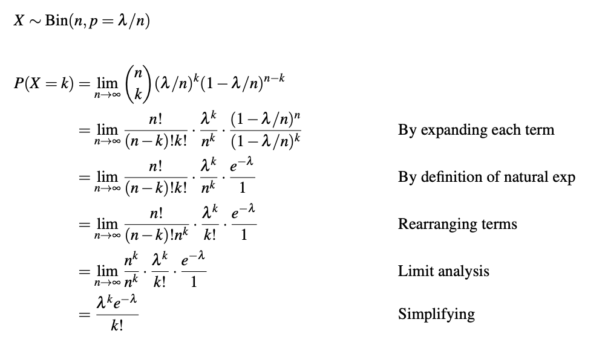

Some good questions were raised:
Since the Negative Binomial distribution gives us the probability of having to run $x$ trials in order to get $k$ successes, then when we get the $k^{th}$ success we stop counting on the $x^{th}$ trial.
This means that we can choose the prior $k-1$ successes from $x-1$ trials randomly and in whatever order they come.
The formulation we learned from the book counts the number of trials needed to get $k$ successes.
There are several different formulations for the same problem. Another is letting $X$ count the number of successes giver $r$ failures: ${k+r-1 \choose k}$.
With a little bit of algebra: $\frac{(k+r-1)\dots(r)}{k!} = (-1)^k\frac{(-r)(-r-1)\dots(-r-k+1)}{k!} = (-1)^k{-r \choose k}$.
So we are choosing successes from negative failures!
The expected value of a negative binomial r.v. is: $\mu = \frac{k}{p}$.
The variance of a negative binomial r.v. is: $\sigma^2 = \frac{k(1-p)}{p^2}$.
The expectation and variance of a geometric r.v. can be obtain from the above by letting $k=1$.
Team $A$ plays team $B$ in a seven-game world series, so the series is over when either team wins four games.
For each game, $P(A$ wins$) = 0.6$, and the games are assumed independent.
What is the probability that the series will end in exactly six games?
A special property of the geometric distribution is the no-memory property: If $X \sim Geo(p)$, then $P(X > j + k | X > j) = P(X > k)$.
Given the CDF of the geometric distribution $G(x;p) = \sum_{i=1}^x p(1-p)^{i-1} = 1 - (1- p)^x$, for $x = 1,2,3,\dots$ (derived in a previous lecture), prove the no-memory property of the geometric distribution.
There are two main characteristics of a Poisson experiment:
Wait a minute! Experiments with fish?!?
No Dory...Poisson refers to the distribution...remember...ah...no, ok.
There are two main characteristics of a Poisson experiment:
Suppose you typically get 4 pieces of mail per day. That becomes your expectation, but there will be a certain spread: sometimes a little more, sometimes a little less, once in a while nothing at all.
Given only the average rate, for a certain period of observation (e.g. pieces of mail per day), and assuming that the process that produce the event flow is essentially random, the Poisson Distribution will tell you how likely it is that you will get 3, or 5, or 11, or any other number, during one period of observation.
That is, it predicts the degree of spread around a known average rate of occurrence.
Suppose we are watching for events and the number of observed events follows a Poisson distribution with rate $\lambda$. Then
$$P(X=x) = \frac{\lambda^xe^{-\lambda}}{x!}$$
where $x=0,1,2,\dots$
The classic Poisson example is the data set of von Bortkiewicz (1898), for the chance of a Prussian cavalryman being killed by the kick of a horse.
Ten army corps were observed over 20 years, giving a total of 200 observations of one corps for a one year period. The total deaths from horse kicks were 122, and the average number of deaths per year per corps was thus 122/200 = 0.61.
In any given year, we wouldn't expect to observe exactly 0.61 deaths in one corps (that is not possible; deaths occur in modules of 1), but sometimes none, sometimes one, occasionally two, perhaps once in a while three, and (we might intuitively expect) very rarely any more.
| Deaths | p | E | A |
|---|---|---|---|
| 0 | 0.54335 | 108.67 | 109 |
| 1 | 0.33145 | 66.29 | 65 |
| 2 | 0.10110 | 20.22 | 22 |
| 3 | 0.02055 | 4.11 | 3 |
| 4 | 0.00315 | 0.63 | 1 |
| 5 | 0.00040 | 0.08 | 0 |
| 6 | 0.00005 | 0.01 | 0 |
Uber is interested in solving the following problem: what is the probability of getting one ride request, two ride requests, etc from a particular location?
After analyzing historical records, they conclude that the average request per minute is 5. Can they figure out their probability question just from this information?
Let $X$ be the number of ride requests in the next minute. Let's find $P(X=k)$ using the binomial distribution!
Split the minute into 60 seconds and count "success" for a request coming in a second and "failure" for no request coming in that second. If requests are equally likely, the the probability of success is 5/60.
Great! so $X \sim Bin(n = 60, p = 5/60)$:
$$P(X=k) = {60 \choose k}\left(\frac{5}{60}\right)^k\left(1-\frac{5}{60}\right)^{60-k}$$
Uber great! But what if we get 2 request in a second??
Ok then, cut it in milliseconds!...and don't ask me what if 2 request in a millisecond!!
Maybe Uber hires a mathematician to help:
